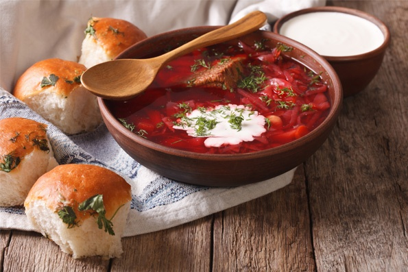

Інгредієнти
| Інгредієнт |
Кількість |
| Буряк |
1 шт. |
| Морква |
1 шт. |
| Цибуля |
1 шт. |
| Соняшникова олія |
4 ст. л. |
| Томатна паста |
3 ст. л. |
| Куряче філе |
350 г |
| Вода |
2 л |
| Картопля |
5 шт. |
| Капуста |
150 г |
Приготування
Борщ із свининою в мультиварці
Перш за все нам потрібно відварити буряк. Варимо його прямо в шкірці. Виймаємо та чекаємо, поки охолоне.
Чистимо та ріжемо наші овочі. Цибулю нарізаємо кубиками, моркву натираємо на тертці. Буряк ріжемо на невеликі смужки.
Робота з мультиваркою
Наливаємо в мультиварку 2 столових ложки олії. Висипаємо цибулю й моркву. Готуємо 7 хвилин в режимі «Смаження».
Далі додаємо буряк, 3 столові ложки томатної пасти та смажимо ще хвилину
Виймаємо овочі, відставляємо вбік. Готуємо куряче філе. Не змінюючи режим, знову додаємо 2 столові ложки соняшникової олії та порізане на невеликі шматки куряче філе. Смажимо 7 хвилин.
Фінальна частина
Ставимо воду кипіти, в цей час чистимо та ріжемо картоплю. Додаємо киплячу воду й картоплю до курки. Вмикаємо режим «Суп» і готуємо 20 хвилин.
Капусту шаткуємо. Додаємо її в мультиварку й готуємо 6 хвилин.
Викладаємо в чашу мультиварки наші овочі. Додаємо сіль, перець за смаком, кладемо лавровий лист. Варимо хвилин 7.
Переводимо мультиварку в режим «Підігрів» і готуємо борщ ще 5 хвилин.
Смачний борщ в мультиварці готовий. Смачного!